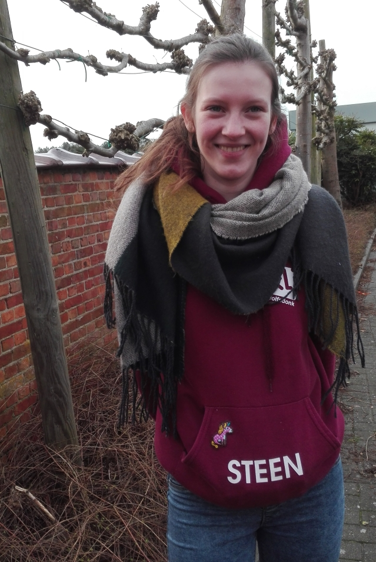

Leiding wolfkes

 Bram
Bram
Bram Vereycken
Mosvenne 11
3272 Testelt
Geboortedatum: 17 november 1993
Studies: Bachelor in de godgeleerdheid en de godsdienstwetenschappen, KULeuven
Functies in de KLJ:
Vuilnis
Dorpsraad
Lotte
Lotte Coorevits
Geboortedatum: 6 april 1999
Studies: Bachelor in de toegepaste psychologie
Functies in de KLJ:
Materiaal verantwoordelijke
Kamp- en weekend verantwoordelijke
Lotte
Lotte Crauwels
Geboortedatum: 14 augustus 1996
Studies: bachelor in audiovisuele kunsten animatiefilm
Functies in de KLJ:
Publicatie
Materiaal verantwoordelijke
Stien
Stien Coorevits
Oude Mechelsebaan 383
3201 Langdorp
Geboortedatum: 6 juli 1997
Studies: Bachelor in de architectuur, universiteit Hasselt
Functies in de KLJ:
Outfit verantwoordelijke
Ledencommunicatie